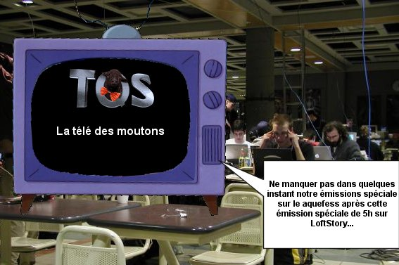
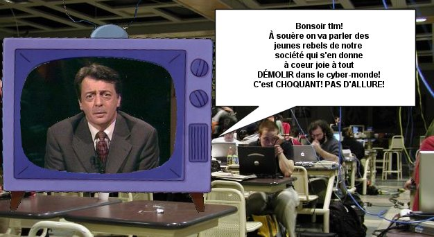
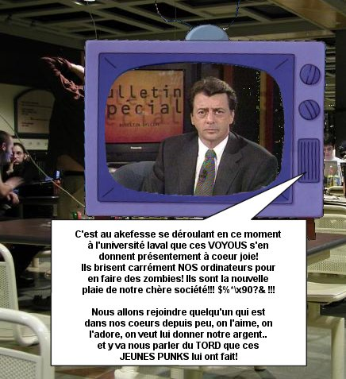
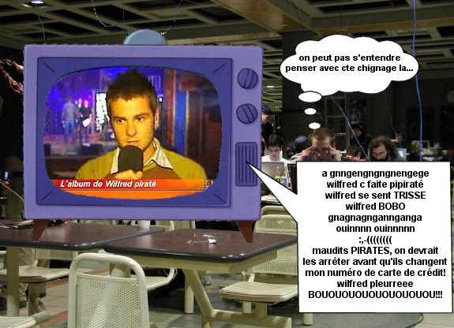
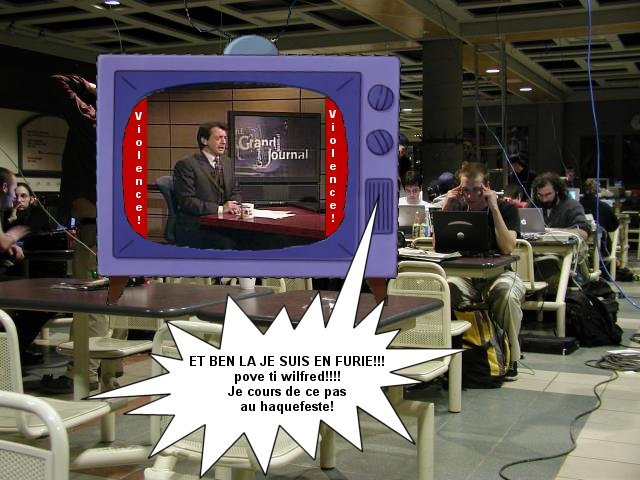

Le hackfest 2003 tellement populaire que visible dans les médias...
Et nous qui pensaient que les lamers c'était sur IRC, pas à TV!

Image censuré :
trop d'allusions sexuelles dans le sauna pour des geeks




Quoi qui va se passer avec TQS et le hackfest?
Serait-ce que le hackfest est en péril?
Mister T. bois t-il encore du lait?
decax va tu finir par trouver cki cherche?? (haha)
toute ces réponses, et mêmes plus, dans la prochaine page!